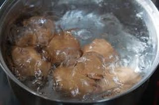
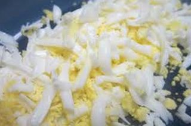
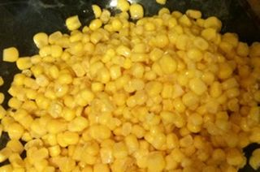
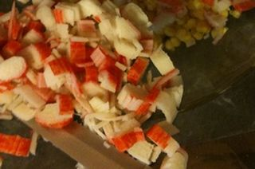
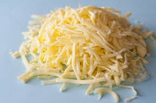
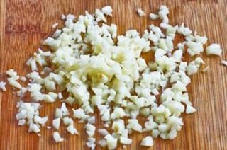
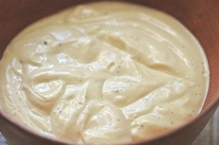
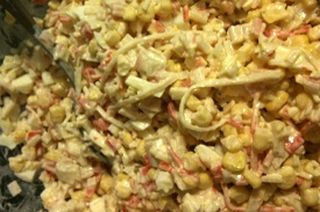

Шаг 1: подготавливаем яйца.

Выкладываем яйца в среднюю кастрюлю и заливаем обычной холодной водой так, чтобы она полностью покрывала компонент. Ставим емкость на средний огонь. Когда яйца закипят, варим их вкрутую в течение 10 минут. Сразу же после этого выключаем конфорку, а кастрюлю ставим под струю холодной воды. Внимание: это очень важно, чтобы впоследствии с компонента можно было с легкостью удалить скорлупу.

Очищенные яйца выкладываем на разделочную доску. По очереди измельчаем их на крупной терке и пересыпаем в среднюю миску.
Шаг 2: подготавливаем консервированную кукурузу.

Воспользовавшись консервным ножом, открываем банку с кукурузой и аккуратно сливаем из нее жидкость. Сам ингредиент высыпаем из емкости в общую миску.
Шаг 3: подготавливаем крабовые палочки.

Замороженные крабовые палочки выкладываем в чистую тарелку и на время оставляем в стороне доходить до комнатной температуры. Когда компонент полностью разморозится, снимаем с него защитную пленку и кладем на разделочную доску. Воспользовавшись ножом, измельчаем на средние кусочки и перекладываем в емкость с яйцами.
Шаг 4: подготавливаем твердый сыр.

С помощью крупной терки измельчаем твердый сыр и сразу же высыпаем его в емкость с другими ингредиентами.
Шаг 5: подготавливаем чесок.

Ножом очищаем чеснок от шелухи и слегка промываем под проточной водой. Выкладываем зубчики на разделочную доску и мелко рубим. Измельченный компонент пересыпаем в свободное блюдце.
Шаг 6: готовим заправку.

В пиалу выливаем майонез и высыпаем измельченный чеснок. С помощью столовой ложки тщательно все перемешиваем до однородности.
Шаг 7: готовим крабовый салат с кукурузой.

Выливаем в миску с измельченными ингредиентами заправку из майонеза и чеснока и, воспользовавшись столовой ложкой, тщательно все перемешиваем до образования однородной массы. Все, салат готов!